Historia hodowli Balao
Za każdym championem stoi znakomita matka. To one — mądre, piękne i pełne charakteru — były prawdziwym fundamentem hodowli Balao.
imiona uzupełnimy wspólnie z Panią Anią
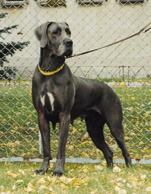
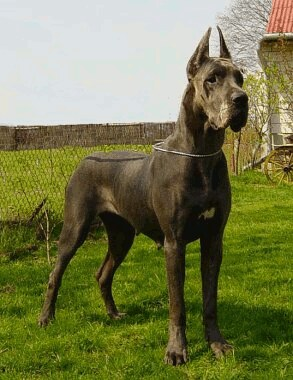
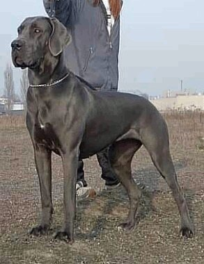
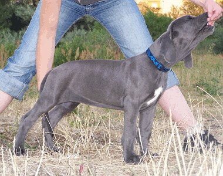
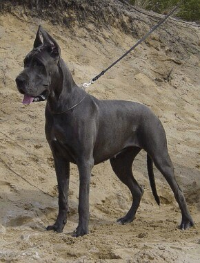
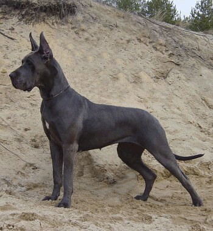
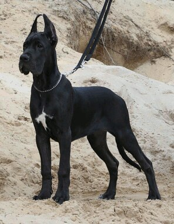
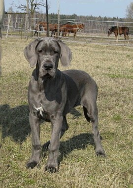
suki, które budowały naszą linię Jacków
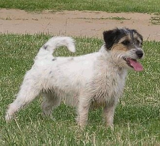
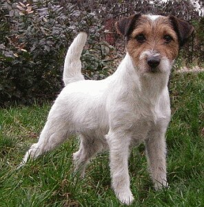
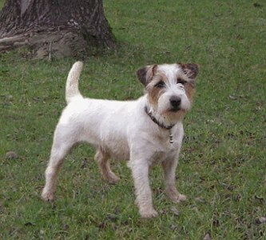
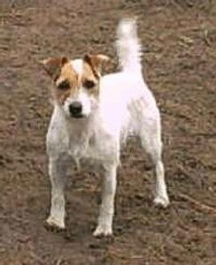
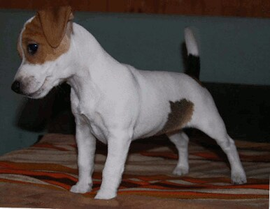
Zdjęcia pochodzą z archiwum dawnej strony balao.pl. Podpisy uzupełniamy — jeśli rozpoznajesz którąś z naszych suk, daj nam znać!